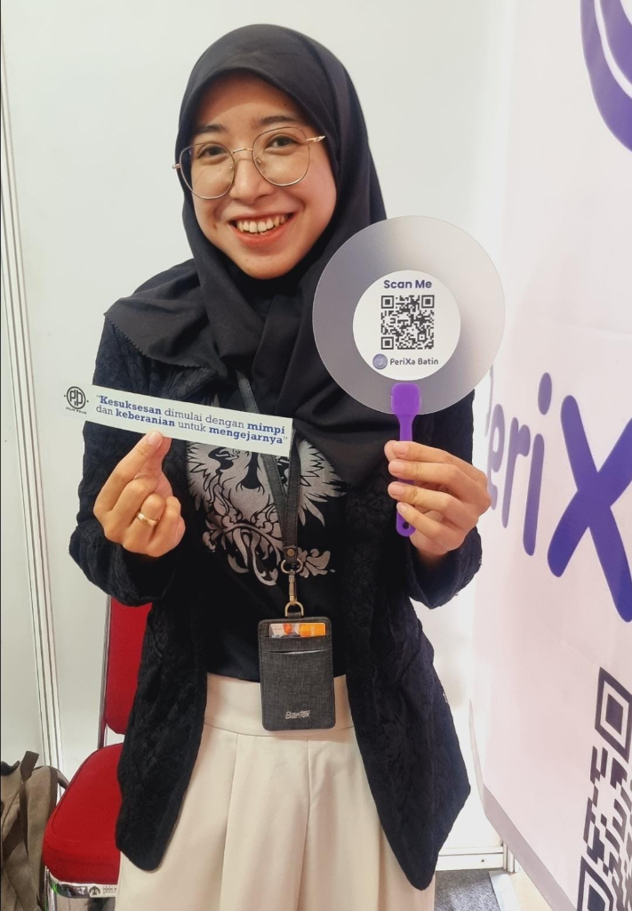

Gimana Ya?
A simple question — informal, almost trivial. In Indonesian, it means: "how about it? what do you think? I'm not sure yet." Yet it reflects the starting point of most complex inquiries. Before method, data, and conclusion, there is a moment of genuine not-knowing. That moment is worth examining.
I build this space around that question. Not as a platform nor as a product, but as an intellectual signature, a record of how thinking moves from ambiguity toward structure.
Ns. Eka Putri Yulianti, S.Kep., M.Kep
Research Assistant, Universitas Indonesia • LPDP Awardee PK-236
Psychiatric Nursing × Technology

Just like success, finding answers requires courage too, doesn't it?
"You are welcome to join. But more than that, I invite you to question alongside me."
Foundational Inquiry
Curiosity
"What questions are we not asking, and how do we move from uncertainty to understanding?"
Integrity
"How do we align research with the needs of people, ensuring that healthcare is both evidence-based and value-driven?"
Innovation
"How do we bridge what is known and what is possible, to make healthcare more human, more just, and more accessible?"
Bridging domains of science and care.
My work spans the intersection of empirical research methodologies and digital transformation in psychiatric nursing.
Supporting Mental Health Scaling-Up at the Showcase STAND
View Blog arrow_forwardMental Health & Psychiatric Nursing Research Cluster (MHPsyCN)
Actively contributing to evidence-based nursing innovations, digital mental health diagnostic research (VR/AI), and community wellness systems at Universitas Indonesia.
MHPsyCN UI
Research Assistant
Contact
Start a conversation